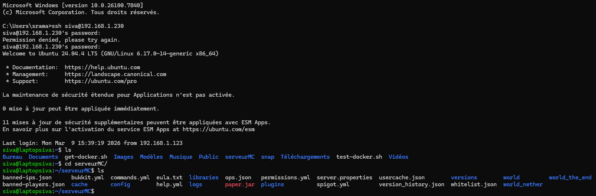

Projet Serveur Minecraft Auto-hébergé
Présentation du Projet
Dans le cadre de mes projets personnels en administration système et réseaux, j'ai transformé un ancien ordinateur en un serveur Minecraft dédié, capable de fonctionner 24h/24 et 7j/7.
L'objectif était de créer une solution performante, économique en énergie et 100% contrôlable à distance, afin d'héberger des parties multijoueurs (jusqu'à 5 joueurs sur des modpacks) sans dépendre d'un hébergeur cloud payant.
Ce projet a nécessité la mise en place d'une architecture "Headless" (sans écran ni périphériques), gérée entièrement en ligne de commande via le réseau local.
Architecture Technique et Matériel
Afin d'optimiser les ressources et réduire la consommation électrique (estimée à environ 30 Watts en moyenne), le système a été allégé au maximum, tant sur le plan matériel que logiciel.
Liste des Équipements (Hardware)
- Hôte : PC avec processeur Intel Core i7 (optimisé pour les calculs monocœur requis par le jeu).
- Stockage & Mémoire : Disque SSD pour la génération rapide des "chunks" et 4 à 8 Go de RAM dédiés au serveur.
- Réseau : Connexion filaire Ethernet directe à la box internet pour garantir un ping stable et éviter les pertes de paquets du Wi-Fi.
Stack Logicielle (Software)
- Système d'exploitation : Ubuntu Serveur (Linux) installé via clé USB bootable (configuration de l'EFI et désactivation du Secure Boot).
- Contrôle à distance : Protocole SSH pour la gestion du serveur depuis n'importe quel terminal du réseau local.
- Serveur Minecraft : Version Java Edition,
Réalisation et Mise en Place
1. Le Défi de l'Alimentation (Sécurité)
L'un des principaux défis a été de garantir une alimentation stable et sécurisée pour le serveur, tout en minimisant les risques de surchauffe. En enlevant la batterie vu que le PC est destiné à être utilisé en mode "Headless", j'ai réduit les risques d'incendie liés à une batterie gonflé à cause de la charge secteur. De plus, j'ai configuré le BIOS pour démarrer automatiquement en cas de coupure de courant, assurant ainsi une disponibilité maximale du serveur.
2. Installation et Configuration du Système d'Exploitation
Après avoir installé Ubuntu Serveur, j'ai configuré le réseau pour permettre l'accès SSH à distance. J'ai également mis en place des règles de pare-feu pour sécuriser les connexions entrantes et sortantes, ainsi que des scripts de surveillance pour alerter en cas de problèmes de performance ou de sécurité.
3. Installation des Dépendances et Configuration du Serveur
Pour vraiment assurer le bon fonctionnement du serveur, j'ai installé les dépendances nécessaires et configuré les paramètres du serveur. De plus j'ai aussi ajouté un accès à distance pour faciliter la gestion du serveur via SFTP et tailscale.
J'ai téléchargé la dernière version du serveur Minecraft Java Edition depuis le site officiel, et j'ai configuré les paramètres du serveur (comme la quantité de RAM allouée, les règles de jeu, et les plugins nécessaires pour le jeu multijoueur). J'ai également mis en place des sauvegardes régulières pour éviter toute perte de données en cas de crash ou de corruption du monde.
Pour éviter tout problème, de changement d'IP local j'ai configuré une adresse IP statique. Directement sur le panel de mon FAI
4. Performance et Optimisation
Après avoir mis toutes les configurations en place, j'ai effectué des tests de performance pour s'assurer que le serveur fonctionne correctement sous charge. à l'aide de "Cockpit" un logiciel de monitoring pour linux
Grâce à l'optimisation du matériel et du logiciel, le serveur est capable de gérer jusqu'à 5 joueurs simultanément sur des modpacks sans rencontrer de problèmes de lag ou de performance. J'ai également configuré des outils de monitoring pour suivre l'utilisation des ressources en temps réel et ajuster les paramètres du serveur si nécessaire.
Capture d'Écran
